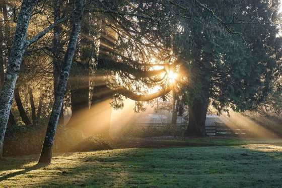
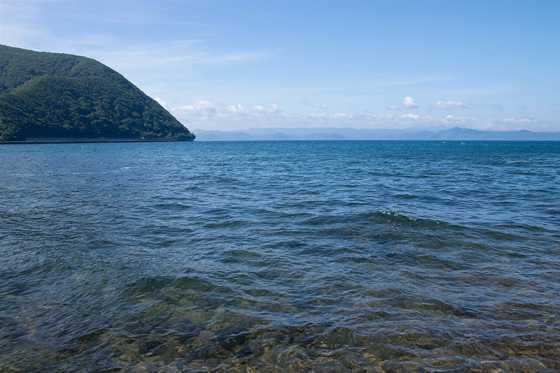
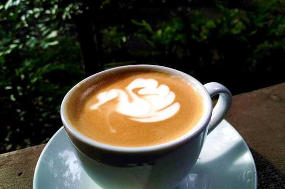

お店の由来・想い
ボーガニックは、かほく市の山あいの集落・若緑にある古民家を活かした、カフェと革工房のお店です。公開されている情報では、空き家・空き店舗の活用補助制度を利用して2021年5月にオープンしました。
店先には地元の大工さんのベンチや石臼のテーブルが置かれ、ゆったり過ごせるとのこと。コーヒーのほか、革小物づくりの革教室やお子様向けのワークショップも行っています。
店名の意味やオーナーの想いは、確認できていないため載せていません。



澄んだ若緑の空気の中で、一杯のコーヒーと、手でつくる革の時間を。
※コピーは制作側の案です。

掲載の写真はフリー素材のイメージで、店舗の実際の様子ではありません。他地域で撮影されたものや、撮影地が不明なものを含みます。
ボーガニックは、かほく市の山あいの集落・若緑にある古民家を活かした、カフェと革工房のお店です。公開されている情報では、空き家・空き店舗の活用補助制度を利用して2021年5月にオープンしました。
店先には地元の大工さんのベンチや石臼のテーブルが置かれ、ゆったり過ごせるとのこと。コーヒーのほか、革小物づくりの革教室やお子様向けのワークショップも行っています。
店名の意味やオーナーの想いは、確認できていないため載せていません。


以下は制作側が作成したイメージで、実在のお客様の声ではありません。
山あいの静かな場所で飲むコーヒーが、とても落ち着く一杯でした。
革小物づくりを体験して、自分だけのキーホルダーができました。
古民家の雰囲気がよく、ゆっくり時間を過ごせそうです。